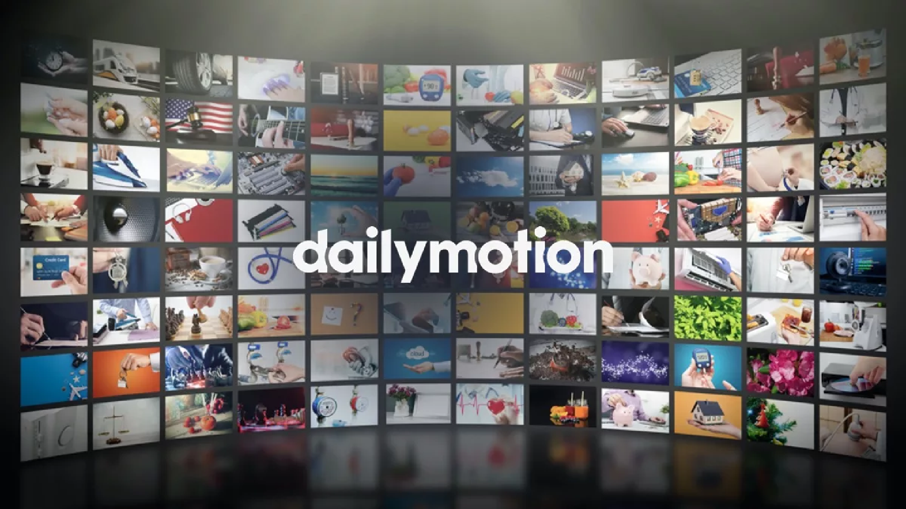
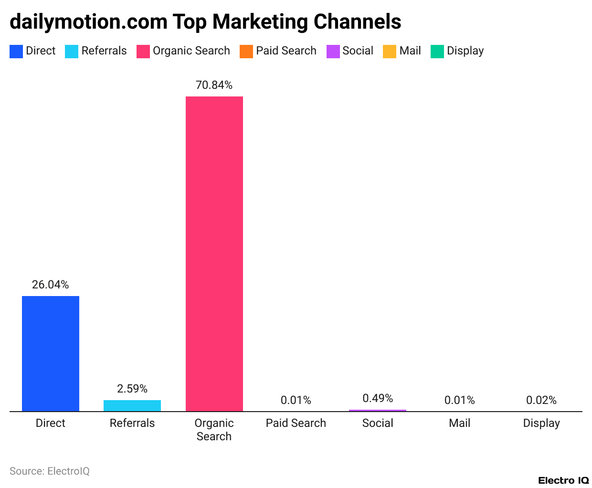

Le modèle de Dailymotion repose principalement sur la monétisation publicitaire et les solutions technologiques professionnelles (B2B). Grâce à son réseau publicitaire intégré, « Dailymotion Advertising », l'entreprise commercialise des formats vidéo ciblés et des campagnes auprès d'annonceurs mondiaux. En parallèle, Dailymotion propose aux grands médias (comme Le Monde, Bein Sports ou MSN) son lecteur vidéo propriétaire clé en main (Dailymotion Pro). Ces médias hébergent leurs vidéos sur Dailymotion et partagent les revenus générés par les publicités diffusées avant ou pendant la vidéo. Cette stratégie B2B permet à la plateforme d’obtenir des millions de vues directement sur d'autres sites web, réduisant ainsi sa dépendance directe à la seule fréquentation de son application grand public.
Filiale historique du géant des médias Vivendi, Dailymotion est aujourd'hui rattachée au groupe Canal+. La plateforme revendique plus de 350 millions d'utilisateurs actifs mensuels à travers le monde et plusieurs milliards de vues de vidéos chaque mois. L’entreprise emploie plusieurs centaines de collaborateurs répartis entre son siège social historique à Paris et ses bureaux internationaux (New York, Singapour, Londres). Pour accélérer sa rentabilité et soutenir la création, Dailymotion a également lancé des fonds d'accompagnement comme le programme « DayOne ». Ce projet permet de financer les nouveaux créateurs de contenus tout en dynamisant l'économie interne de son écosystème vidéo.
